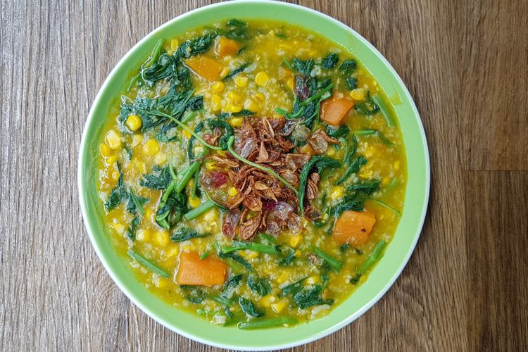

Tinutuan

Tinutuan or Manado Porridge is one of Indonesian specialties from Manado, North Sulawesi. There are also those who say tinutuan is a typical food of Minahasa, North Sulawesi. Tinutuan is a mixture of various kinds of vegetables, does not contain meat, so this food can be a social food between community groups in Manado.
Ingredients:
- 200 g of rice
- 2 liters of water
- 1 sheet of young pandan leaves, finely sliced
- 2 bay leaves
- 1 stalk of lemongrass, bruised
- 2 tsp salt
- 1 piece of sweet corn, peel the seeds
- 500 g old pumpkin, cut into small pieces
- 100 g of kale/spinach leaves
- 50 g of lelem leaves, coarsely sliced
- 100 g gedi leaves, coarsely sliced
- 30 basil leaves
Steps:
- Wash the rice thoroughly. Boil water, add rice. Cook over medium heat until the rice breaks.
- Add bay leaves, pandan leaves and lemongrass. Cook over low heat until boiling.
- Add the pumpkin and sweet corn and salt. Cook until it becomes an almost soft mush rice and pumpkin is soft.
- Add kale, lemem and gedi leaves. Cook until wilted and soft and the porridge thickens.
- Enter the basil leaves, stir until wilted then remove from heat.